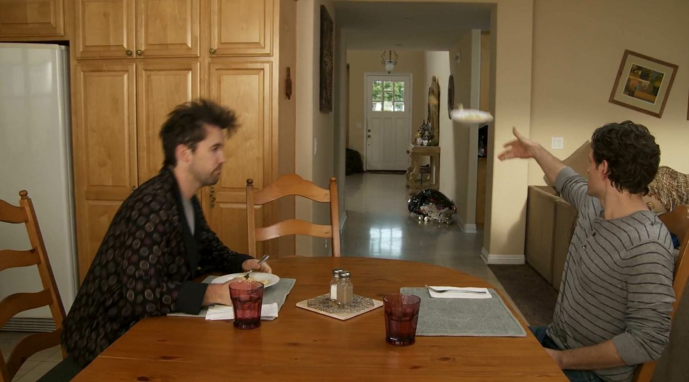
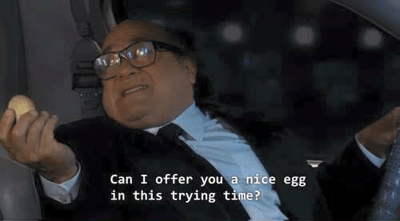

And of course you want to know what these shows are, now that I've been hyping them up!
PS spoilers included!!!
My favorite comforting meth show. Idk what to tell you, like it's widely considered one of the greatest shows ever for good reason. I've watched this show idk how many times, and my sister still doesn't know most of the plot. I love all the characters, Jesse Pinkman is a little sopping wet rat and I love him dearly. Skyler White, I would treat you right. And Walter White can kick blue rocks. Possibly my favorite comfort show ever which is really funny because no one in here is comforted. Something about characters I enjoy being in agony is just really fun for me :) Anyways, I've watched this show like five times already. It was the last show my mom and I binged together, and she really liked it too! Jimmy McGill is my little princess whom I loathe, Kim Wexler, I would treat you right, and Nacho Varga is on my lockscreen. The funniest comfort show because I only rewatch season three lmao. I, once again, love these characters and their twisted little minds. Season three is my fav because it was the first one I watched lol. I've probably watched it ten billion times, but I have yet to watch the final season because the fourth was so bad 😩 I would do anything for Love Quinn, and I want to keep Joe in some sort of mason jar. Finally, an actual comedy. This one is actually the most comforting comfort show!! I've watched it ten bajillion times, it's my and my sister's fav show!! I recommend watching this show while you're crying, it's absurdly hilarious. I quote and reference this show all the time, I know my friends think I'm annoying as hell 😭 It birthed so many memes it's actually crazy

Yeah. This one's pretty obvious lol. Like many other people, this was my quarantine show, I think my sister and I binged it at least ten times. It's just so fun and cozy, and obviously famously funny. I wish it wasn't on Poob or whatever so I could watch it again.
Breaking Bad
Better Call Saul
You (The Netflix show)
It's Always Sunny in Philadelphia
The Office
Aren't all of those equally good AND incredibly comforting?
Idk I just think all genres work as comfort shows!!
Comedies are a given! Who amongst us has not uttered a quote from The Office? Who hath not laid their eyes upon a meme from IASIP? And it's nice to just sit back and hear the same punchlines over and over, and it gets even BETTER when you get to share that, by definition, insane experience with someone else!! But I think dramas also work really well (especially long ones). Like yeah I know the plot of Breaking Bad because I've watched it one billion times, but I still like seeing the journey!! I still like falling in love with these characters! I still like hoping that this time, it'll be different!! And of course it never is, but that's okay too, because I can watch it again and again and again—
I'm done now!! You can yap about your own favorite shows in the text box below if you want. There's no submit button because that is uhhhhhhh too complicated for me to figure out lmao. Think of it as screaming into the void.